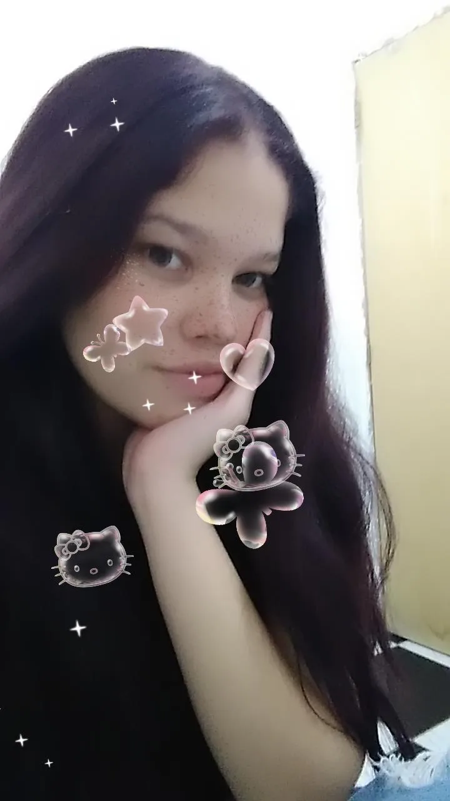

Nicoly Serra da Silva
Cyber Security | Redes | Segurança da Informação | Python
-

Sobre
Oi! meu nome é Nicoly Serra, seja bem-vindo(a)!
Sou uma pessoa curiosa, determinada e movida por desafios. Gosto de aprender coisas novas, explorar diferentes áreas da tecnologia e entender como as coisas funcionam por trás delas. Valorizo responsabilidade, respeito, colaboração e a oportunidade de crescer através das experiências que encontro pelo caminho. Tenho um perfil bastante focado em evolução: gosto de estabelecer objetivos, buscar conhecimento e sair da minha zona de conforto. Fora da vida profissional, também tenho grande interesse por cultura, animes, livros de fantasia, universo geek e criatividade, elementos que refletem meu lado explorador e minha vontade constante de conhecer algo novo.